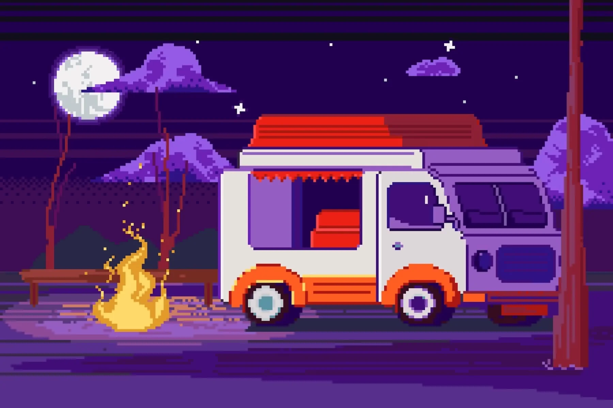
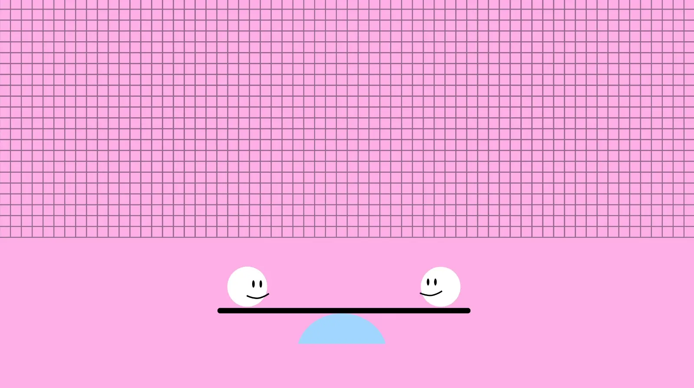
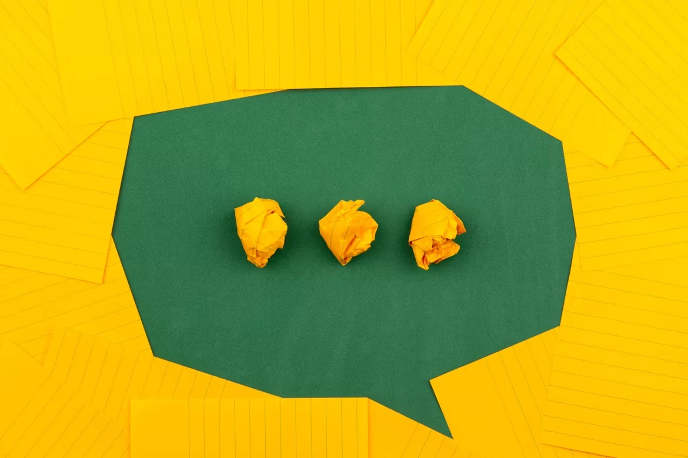
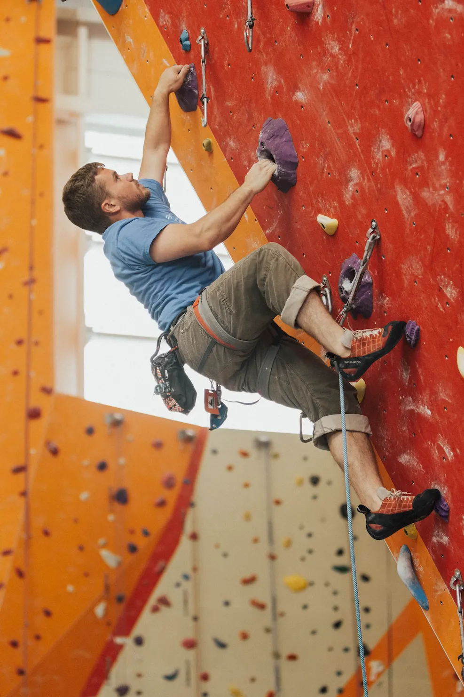
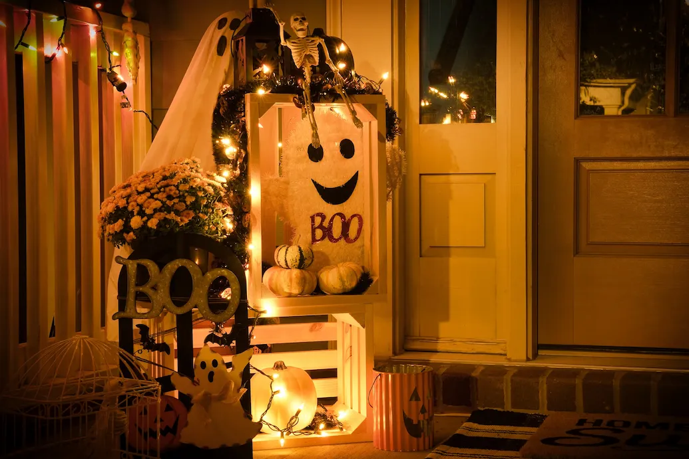
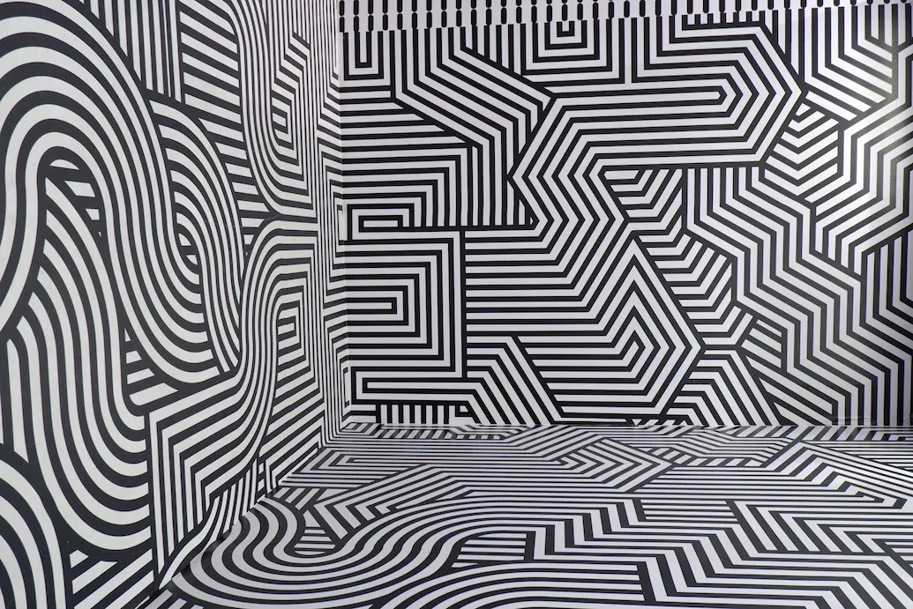

-
Фритрек и нулевой спринт: Подготовка к работе
 </html> -
1 спринт: Я — чистый лист
Только вперед -
1 спринт: А если не получится?
happy -
2 спринт: Погоня за идеалом
 Поиск решения -
2 спринт: О тех, кто рядом
 care -
3 спринт: Обходные стратегии
 <support> -
3 спринт: Когда опускаются руки
 ложный страх -
«Сейчас я здесь»
 labyrinth